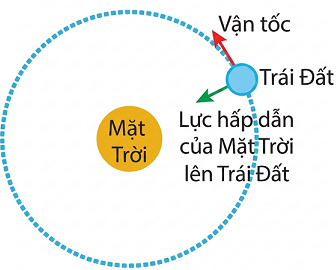
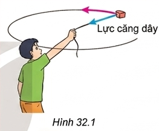
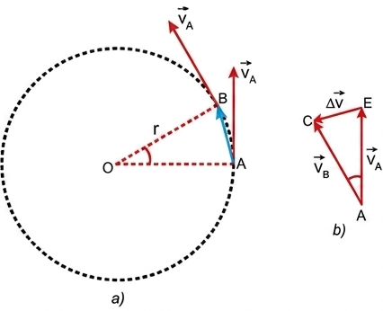
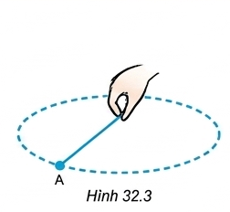
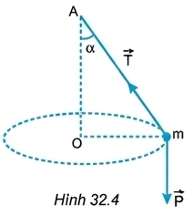
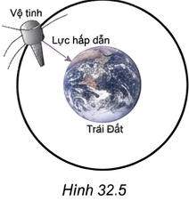
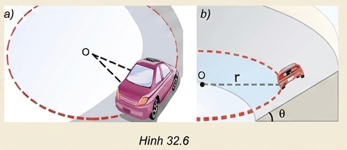
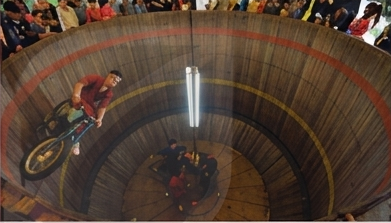
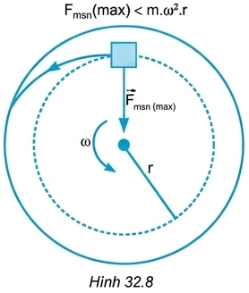

Chương VI: Chuyển động tròn đều
Bài 32: Lực Hướng Tâm Và Gia Tốc Hướng Tâm

I. LỰC HƯỚNG TÂM
✋ Hoạt động: Dùng một sợi dây nhẹ không dãn buộc vào một cái tẩy. Quay dây sao cho cái tẩy chuyển động tròn trong mặt phẳng nằm ngang có tâm là đầu dây mà tay giữ.

Hình 32.1
❓ Trả lời các câu hỏi sau:
- Lực nào sau đây làm cái tẩy chuyển động tròn? (Trọng lực, lực cản không khí, hay lực căng dây?)
- Nếu cái tẩy đang chuyển động mà ta buông tay ra thì hiện tượng gì xảy ra?
- Lực nào duy trì chuyển động tròn của Trái Đất xung quanh Mặt Trời?
- Lực căng dây hướng vào tâm quỹ đạo của cái tẩy làm nó chuyển động tròn.
- Cái tẩy sẽ văng ra theo phương tiếp tuyến với quỹ đạo theo hướng vận tốc tại điểm đó.
- Lực hấp dẫn của Mặt Trời tác dụng lên Trái Đất duy trì chuyển động này.
Định nghĩa
Lực (hay hợp lực) tác dụng lên vật chuyển động tròn đều hướng vào tâm quỹ đạo gọi là lực hướng tâm.
❓ Tìm thêm ví dụ về lực hướng tâm.
- Lực ma sát nghỉ đóng vai trò lực hướng tâm khi ô tô đi vào khúc cua trên mặt đường phẳng.
- Lực tĩnh điện đóng vai trò lực hướng tâm giữ electron quay quanh hạt nhân nguyên tử.
II. GIA TỐC HƯỚNG TÂM
Trong chuyển động tròn đều, lực hướng tâm gây gia tốc hướng vào tâm nên gia tốc này được gọi là gia tốc hướng tâm, kí hiệu là \(a_{ht}\).
Công thức
\( a_{ht} = \frac{v^2}{r} = \omega^2 r \)
💡 Em có biết?
Để tính độ lớn của gia tốc hướng tâm ta sử dụng công thức gia tốc: \( \vec{a} = \frac{\Delta\vec{v}}{\Delta t} \)

Hình 32.2
Tam giác AOB và tam giác EAC là hai tam giác cân đồng dạng nên:
\( \frac{\Delta v}{v} = \frac{AB}{r} \Rightarrow \frac{\Delta v}{v} = \frac{v \cdot \Delta t}{r} \)
Suy ra: \( a_{ht} = \frac{\Delta v}{\Delta t} = \frac{v^2}{r} \). Vì \( v = \omega \cdot r \) nên \( a_{ht} = \omega^2 \cdot r \)
Kết nối tri thức (Bài tập)
Câu 1: Tính gia tốc hướng tâm của một vệ tinh nhân tạo chuyển động tròn đều quanh Trái Đất với bán kính quỹ đạo là \(7000 \text{ km}\) và tốc độ \(7,57 \text{ km/s}\).
Đổi đơn vị: \(r = 7000 \text{ km} = 7 \cdot 10^6 \text{ m}\); \(v = 7,57 \text{ km/s} = 7570 \text{ m/s}\).
Áp dụng công thức: \( a_{ht} = \frac{v^2}{r} = \frac{7570^2}{7 \cdot 10^6} \approx 8,19 \text{ m/s}^2 \).
Câu 2: Tính gia tốc hướng tâm của Mặt Trăng. Biết khoảng cách từ Mặt Trăng đến tâm Trái Đất là \(3,84 \cdot 10^8 \text{ m}\) và chu kì quay là \(27,2 \text{ ngày}\).
Đổi chu kì: \(T = 27,2 \text{ ngày} = 27,2 \cdot 24 \cdot 3600 = 2350080 \text{ s}\).
Tốc độ góc: \( \omega = \frac{2\pi}{T} \approx 2,67 \cdot 10^{-6} \text{ rad/s} \).
Gia tốc hướng tâm: \( a_{ht} = \omega^2 \cdot r = (2,67 \cdot 10^{-6})^2 \cdot 3,84 \cdot 10^8 \approx 2,7 \cdot 10^{-3} \text{ m/s}^2 \).
Câu 3: Kim phút của một chiếc đồng hồ dài \(8 \text{ cm}\). Tính gia tốc hướng tâm của đầu kim.
Chu kì kim phút: \( T = 1 \text{ giờ} = 3600 \text{ s} \).
Bán kính \(r = 8 \text{ cm} = 0,08 \text{ m}\).
Gia tốc: \( a_{ht} = \omega^2 r = \left(\frac{2\pi}{T}\right)^2 \cdot r = \left(\frac{2\pi}{3600}\right)^2 \cdot 0,08 \approx 2,44 \cdot 10^{-7} \text{ m/s}^2 \).
III. CÔNG THỨC ĐỘ LỚN LỰC HƯỚNG TÂM
Công thức định luật 2 Newton
\( F_{ht} = m \cdot a_{ht} = \frac{m \cdot v^2}{r} = m \cdot \omega^2 \cdot r \)
Ví dụ: Một vật nhỏ buộc vào đầu một sợi dây, nếu quay đều và nhanh, sợi dây gần như quay trong mặt phẳng nằm ngang (Hình 32.3). Nếu quay đều và chậm, sợi dây quét thành một mặt nón (Hình 32.4).

Hình 32.3

Hình 32.4
❓ Vẽ hợp lực của lực căng dây \( \vec{T} \) và trọng lực \( \vec{P} \), từ đó xác định lực hướng tâm trong Hình 32.4.
Hợp lực của lực căng dây \( \vec{T} \) và trọng lực \( \vec{P} \) là một lực có phương ngang, chiều hướng vào tâm O của quỹ đạo tròn. Hợp lực này chính là lực hướng tâm duy trì chuyển động tròn đều của vật: \( \vec{F}_{ht} = \vec{T} + \vec{P} \).
Bài tập áp dụng
Câu 1: Trong trường hợp ở Hình 32.4, dây dài 0,75 m.
a) Bạn A nói: "Tốc độ quay càng lớn thì góc lệch của dây so với phương thẳng đứng càng lớn". Chứng minh.
b) Tính tần số quay để dây lệch góc \( \alpha = 60^\circ \) (\(g = 9,8 \text{ m/s}^2\)).
a) Ta có \( \tan \alpha = \frac{F_{ht}}{P} = \frac{m\omega^2 r}{mg} = \frac{\omega^2 (l \sin \alpha)}{g} \Rightarrow \cos \alpha = \frac{g}{\omega^2 l} \).
Khi tốc độ góc \( \omega \) tăng \(\Rightarrow \cos \alpha\) giảm \(\Rightarrow\) góc \(\alpha\) tăng. Lời bạn A đúng.
b) Thay số: \( \cos 60^\circ = \frac{9,8}{\omega^2 \cdot 0,75} \Rightarrow \omega \approx 5,11 \text{ rad/s} \).
Tần số: \( f = \frac{\omega}{2\pi} \approx 0,81 \text{ Hz} \).
Câu 2: Hình 32.5 mô tả vệ tinh nhân tạo.

a) Lực nào là lực hướng tâm?
b) Tính gia tốc hướng tâm của vệ tinh địa tĩnh (\(R = 6400 \text{ km}\), \(h = 35780 \text{ km}\)).
a) Lực hấp dẫn của Trái Đất tác dụng lên vệ tinh đóng vai trò là lực hướng tâm.
b) Vệ tinh địa tĩnh có chu kì bằng chu kì tự quay của TĐ: \( T = 24 \text{ h} = 86400 \text{ s} \).
Bán kính quỹ đạo: \( r = R + h = 6400 + 35780 = 42180 \text{ km} = 4,218 \cdot 10^7 \text{ m} \).
Gia tốc: \( a_{ht} = \left(\frac{2\pi}{T}\right)^2 r = \left(\frac{2\pi}{86400}\right)^2 \cdot 4,218 \cdot 10^7 \approx 0,22 \text{ m/s}^2 \).
🌍 Kết nối với cuộc sống
Hình 32.6 mô tả ô tô chuyển động trên quỹ đạo tròn (a: mặt đường ngang, b: mặt đường nghiêng).

Thảo luận:
a) Lực nào là lực hướng tâm trong mỗi trường hợp?
b) Lí do đoạn đường cong phải làm mặt đường nghiêng?
c) Tại sao phải giảm tốc khi vào cung đường tròn?
a) Đường ngang: Lực ma sát nghỉ. Đường nghiêng: Hợp lực của trọng lực và phản lực (có thể thêm lực ma sát).
b) Tạo ra thành phần lực hướng tâm lớn hơn giúp xe ôm cua an toàn, không phụ thuộc quá nhiều vào ma sát (rất nguy hiểm khi trời mưa trơn trượt).
c) Vì \( F_{ht} = m\frac{v^2}{r} \), nếu đi quá nhanh (\(v\) lớn), lực ma sát không đủ cung cấp lực hướng tâm, xe sẽ bị văng ra khỏi đường (hiện tượng trượt li tâm).
📚 Em đã học
- Gia tốc trong chuyển động tròn đều luôn hướng vào tâm và có độ lớn: \( a_{ht} = \frac{v^2}{r} = \omega^2 r \).
- Lực (hay hợp lực) tác dụng vào vật gây ra gia tốc hướng tâm gọi là lực hướng tâm.
- Biểu thức: \( F_{ht} = m \cdot a_{ht} = \frac{mv^2}{r} = m\omega^2 r \).
🚀 Em có thể
- Giải thích lí do vì sao trong thực tế người ta chỉ làm cầu vồng lên chứ không làm cầu võng xuống?
- Giải thích vì sao trong môn xiếc mô tô bay, diễn viên có thể đi mô tô trong thành lồng quay tròn mà không bị rơi.

1. Cầu vồng lên: Áp lực xe lên cầu \( N = P - F_{ht} < P \). Cầu sẽ chịu lực ép nhỏ hơn trọng lượng xe, bền hơn. Cầu võng xuống \( N = P + F_{ht} > P \), dễ gãy sập.
2. Lực ma sát nghỉ cực đại tỉ lệ thuận với áp lực (phản lực N). Khi quay nhanh, phản lực \( N = F_{ht} = m\frac{v^2}{r} \) rất lớn, làm lực ma sát đủ lớn để cân bằng với trọng lượng của xe và người, giúp họ không bị rơi.
💡 Em có biết: Chuyển động li tâm
Một vật đặt trên mặt bàn quay. Nếu tăng tốc độ góc \( \omega \), lực ma sát nghỉ cực đại không đủ cung cấp lực hướng tâm \( F_{msn(max)} < m\omega^2 r \). Vật sẽ trượt ra xa tâm và văng ra ngoài. Đó là chuyển động li tâm.

Câu hỏi: Giải thích tại sao thùng giặt quần áo có nhiều lỗ thủng?
Khi vắt, lồng giặt quay rất nhanh. Lực liên kết giữa nước và quần áo không đủ làm lực hướng tâm, các giọt nước chuyển động li tâm, văng qua các lỗ thủng ra ngoài giúp quần áo khô ráo.
BÀI TẬP TỔNG KẾT & CỦNG CỐ
A. Bài tập vận dụng tính toán
Bài 1:
Một vật khối lượng 0,5 kg chuyển động tròn đều với tốc độ 4 m/s trên quỹ đạo có bán kính 2 m. Tính gia tốc hướng tâm của vật.
Áp dụng công thức tính gia tốc hướng tâm:
\( a_{ht} = \frac{v^2}{r} = \frac{4^2}{2} = \frac{16}{2} = 8 \text{ m/s}^2 \)
Bài 2:
Một ô tô khối lượng 1,5 tấn chuyển động đều qua một cầu vượt (coi như cung tròn) với tốc độ 36 km/h. Bán kính cong của cầu là 50 m. Tính lực hướng tâm tác dụng lên xe.
Đổi: \( m = 1,5 \text{ tấn} = 1500 \text{ kg} \); \( v = 36 \text{ km/h} = 10 \text{ m/s} \).
Áp dụng công thức tính lực hướng tâm:
\( F_{ht} = \frac{m \cdot v^2}{r} = \frac{1500 \cdot 10^2}{50} = \frac{1500 \cdot 100}{50} = 3000 \text{ N} \)
Bài 3:
Một vật chuyển động tròn đều có gia tốc hướng tâm là \( 10 \text{ m/s}^2 \), trên quỹ đạo bán kính \( 0,4 \text{ m} \). Tính tốc độ góc của vật đó.
Từ công thức: \( a_{ht} = \omega^2 \cdot r \)
\( \Rightarrow \omega = \sqrt{\frac{a_{ht}}{r}} = \sqrt{\frac{10}{0,4}} = \sqrt{25} = 5 \text{ rad/s} \)